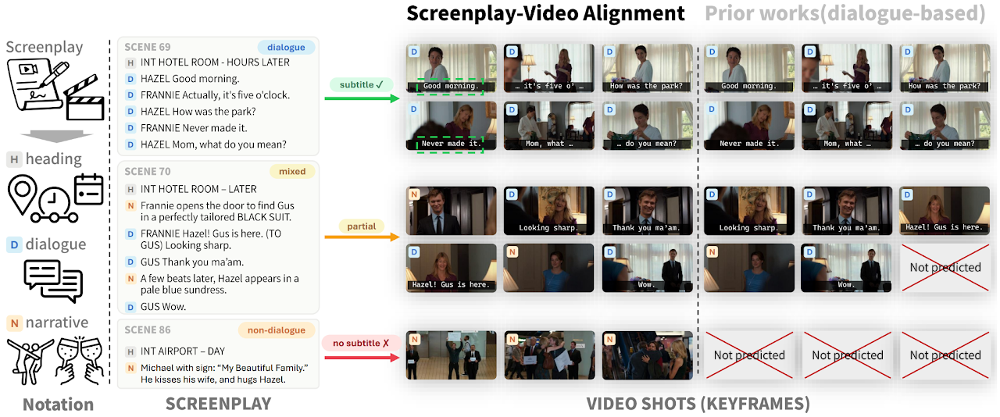
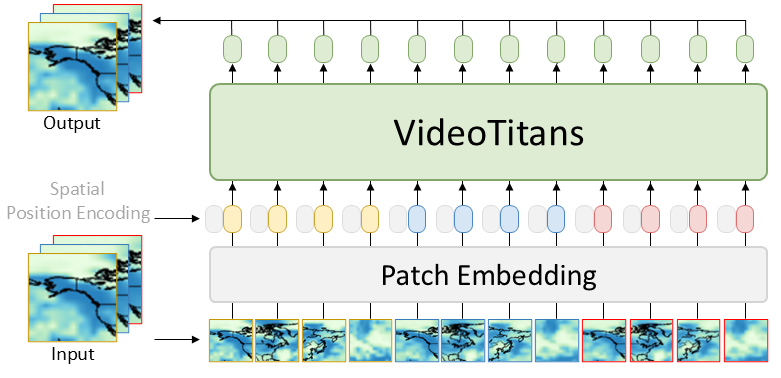
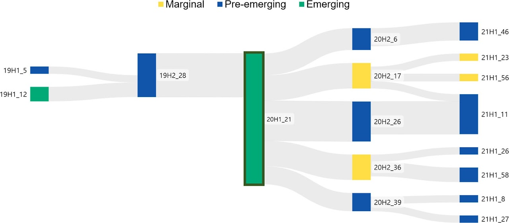
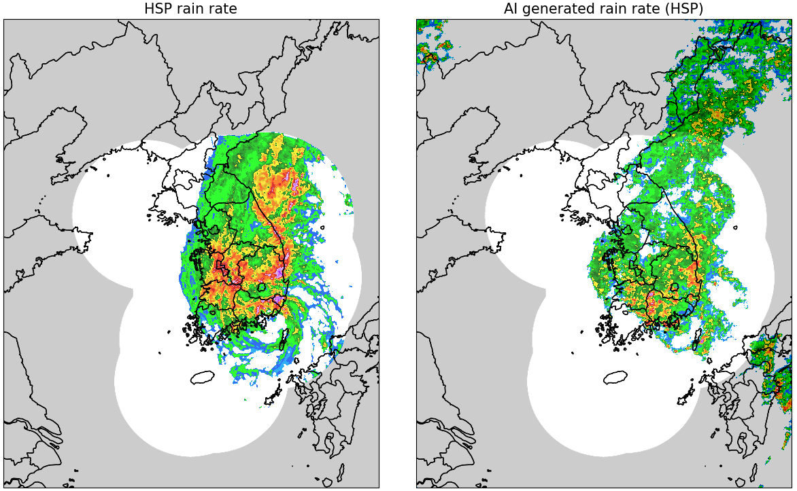
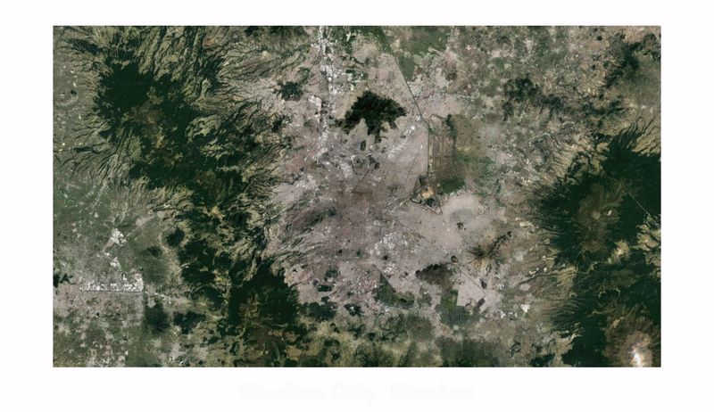
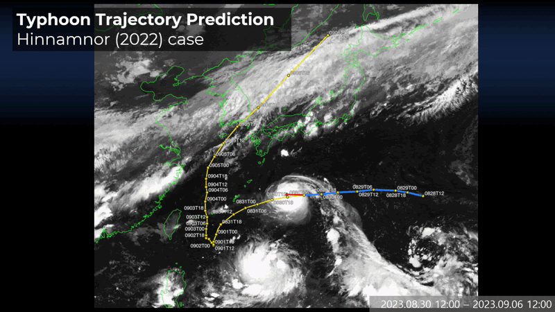
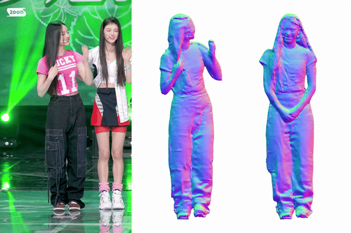
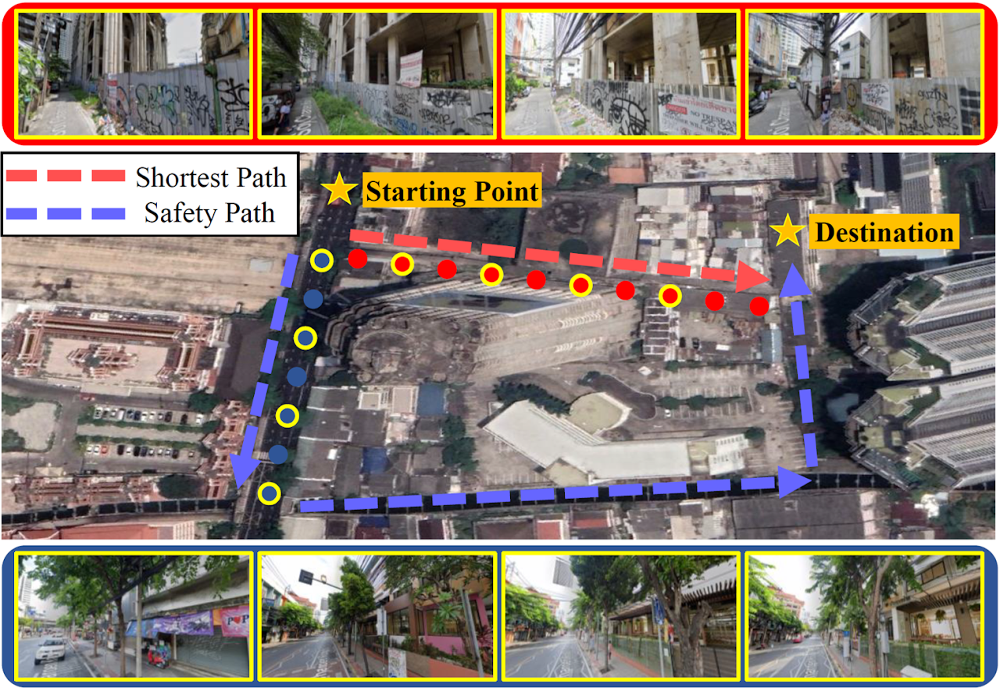
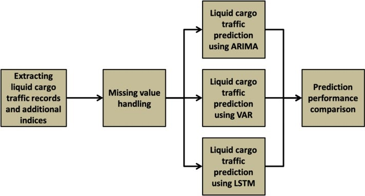

International Conference
From Script to Shot: A Benchmark for Grounding Screenplays in Movies
European Conference on Computer Vision (ECCV), Sep 2026
Selected international conference and journal publications.

European Conference on Computer Vision (ECCV), Sep 2026

The Thirty-ninth Annual Conference on Neural Information Processing Systems (NeurIPS), Dec 2025

Information Processing & Management (IPM), Nov 2025

The Thirty-Ninth AAAI Conference on Artificial Intelligence (AAAI), Feb 2025
Oral

IEEE Transactions on Pattern Analysis and Machine Intelligence (TPAMI), Nov 2024
2025 National R&D Outstanding Research Achievement (Land, Infrastructure and Transport)
IEEE/CVF Conference on Computer Vision and Pattern Recognition (CVPR), Jun 2024

The Twelfth International Conference on Learning Representations (ICLR), May 2024
Spotlight · IITP Director's Award

IEEE/CVF Conference on Computer Vision and Pattern Recognition (CVPR), Jun 2023
Highlight · HumanTech Silver Prize · Qualcomm Innovation Fellowship Korea 2023

The Thirty-Sixth AAAI Conference on Artificial Intelligence (AAAI), Feb 2022

Expert Systems with Applications (ESWA), Dec 2021